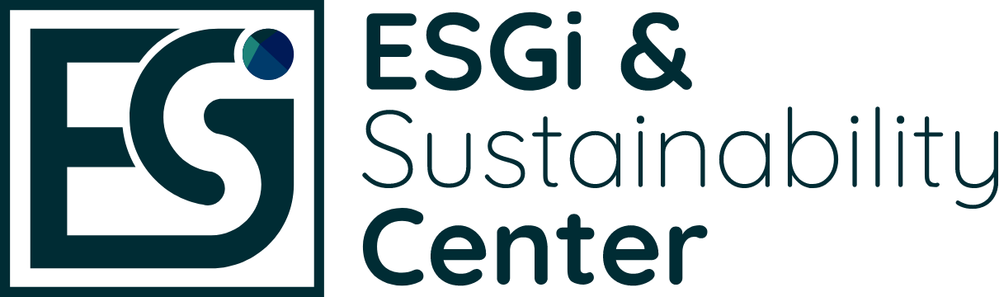

ESG란 무엇인가요?
- 환경(Environment), 사회(Social), 지배구조(Governance)의 약칭
- 과거 비재무적 요소였던 환경, 사회, 지배구조가 전세계 기업과 주요 금융기관, 주주들의 핵심가치로 주목 받으면서, 지속가능경영과 투자를 위해 기업이 필수적으로 이행해야 하는 핵심경영전략
ESG평가 신청방법
- 1 www.krating.co.kr 접속
- 2 로그인(비회원인 경우 회원가입 필요)
- 3 평가신청→ 4 상품별 신청
- 5 ESG평가용 보고서 선택→ 6 바로 신청 클릭
ESG 평가가 왜 필요한가요?
전세계적으로 ESG(환경, 사회, 지배구조)에 대한 중요성 대두, 국내에서도 금융기관, 대기업 중심으로 여신심사, 협력업체 평가에 ESG 경영상태를 반영하는 추세 확대
차후 확대되는 ESG 등급 활용에 대비하여 자사의 ESG 등급 관리 필요
기업의 재무적 성과만이 아니라 환경보호, 사회적 책임, 적정한 지배구조 등 비재무적인 요소를 고려하여 판단
-
환경 이슈
- 환경 경영
- 오염물질
- 에너지, 온실가스
- 지원관리 등
-
사회 이슈
- 인적자원관리
- 정보보호
- 근로환경
- 사회공헌 등
-
지배구조
이슈- 공정거래부패방지
- 이사회, 감사기구
- 지분구조 등